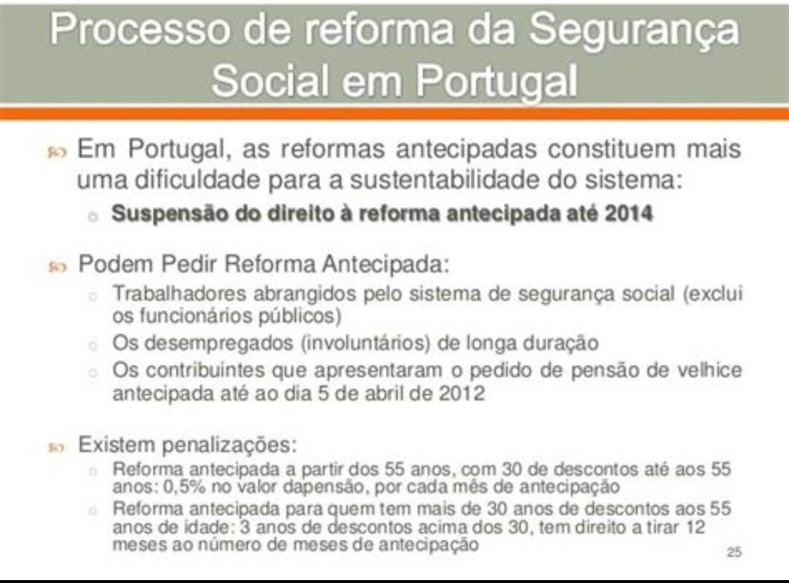

Publicado em 2025-05-08 16:14:40
Num país onde dois terços dos reformados sobrevivem com menos de 480 euros por mês, onde o silêncio do sistema ecoa mais alto que o clamor dos esquecidos, torna-se urgente erguer a voz e exigir: transparência, justiça e dignidade.
Durante décadas, a Segurança Social foi vendida como um pacto de solidariedade entre gerações. Mas esse pacto está a desfazer-se. Não por culpa dos mais velhos, nem dos mais novos — mas por um sistema opaco, desiquilibrado e gerido como uma caixa negra.
Este manifesto é um apelo. Não ao poder instalado, mas ao cidadão consciente, ao reformado indignado, ao jovem que desconfia que o seu futuro está a ser hipotecado num jogo que não controla.
Criação imediata de um portal público em tempo real, onde cada euro da Segurança Social seja visível, rastreável, auditável.
Queremos saber quem contribui, quem recebe, quanto e porquê. A verdade é um direito — o obscurantismo, um abuso.
Separação entre:
Justiça não é tratar todos como iguais. É tratar cada um conforme a verdade da sua história.
Porque o luxo com dinheiro público é obsceno, e a miséria com décadas de trabalho é revoltante.
Criar uma entidade independente de fiscalização, com tecnologia e coragem.
Premiar denúncias fundadas. Cruzar dados, expor fraudes.
Porque cada fraude é um prego no caixão da justiça social.
Cada cidadão deve poder simular o seu futuro contributivo.
Nas escolas deve-se ensinar o que é a Segurança Social e como funciona.
Porque um povo informado é um povo livre.
Um órgão consultivo formado por cidadãos comuns, sorteados como jurados populares.
Voz independente, fiscalizadora e propositiva.
Porque o futuro da Segurança Social não pode estar só nas mãos de quem dela depende politicamente.
Este manifesto não é uma proposta técnica.
É um grito ético, um murmúrio coletivo que se transforma em clamor.
É o início de uma exigência: que a Segurança Social volte a ser um pacto de confiança entre gerações, não uma roleta de interesses ou um cofre mal fechado.
Assina. Partilha. Revolta-te.
Porque não há reforma justa sem justiça na reforma.
Por Augustus Veritas Lumen